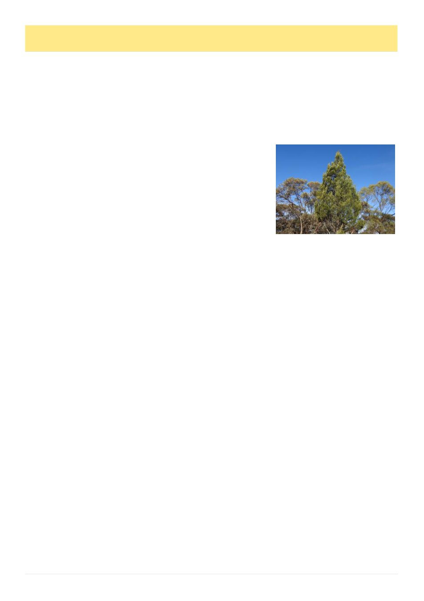

28
Australian Bee Journal
Season Report
By John Edmonds
The start of May has seen some rain, which will en-
courage farmers to sow crops and give the forests a drink.
It has become very dry around the Geelong region and
the grass that grew from the past rains has started to be-
come brown. Few flowering plants can be found, fortu-
nately the hives have stored pollen. The cold weather has
persisted and it has been too cold to do more testing for
varroa. Most hives have been packed down for winter
and some honey is still over clearer boards waiting to be
removed. The shed is full of boxes waiting to be extract-
ed, but we seem to be so busy with other chores like
packing honey. Honey sales are variable with customers
looking for value.
Start of May
Winter flowering ironbark [Eucalyptus sideroxylon]
has started to flower and combined with the warm spell
of weather the hives filled an ideal box in a fortnight.
The first week of June is forecast to be cooler but this
winter is predicted to be warmer and drier than usual.
So, the decision will be ―do we put the bees to sleep or
keep them working?‖
A beekeeper told me that his hives were packed
down to eight frames of bees for winter, but at a recent
inspection he discovered they were now six frames of
bees. Is it the poor autumn or varroa treatments causing
the bees to drop strength? Another beekeeper is reluctant
to reduce his double hives as the brood box has a lot of
brood and little honey stores.
Hive scales report hives in the Geelong area vary
from 48 to 65kg.
Flowering Observations:
Bees handle yellow gum [Eucalyptus leucoxylon]
flowering during the winter better than the ironbark.
When the bees have extracted frames, they can fill them
quickly with sloppy nectar during the cold, and that can
cause fermentation problems. Presently the yellow gum
[Eucalyptus leucoxylon] throughout Central Victoria is
looking a picture and yielding well.
I am finding that washing bees for varroa testing
takes a lot of time, but is necessary to evaluate varroa
numbers.
I have taken an interest in soil fertility and the forest
floor needs the bark and leaves dropped from the trees to
form the compost to nourish the plants. I think the con-
stant environmental burning of the forests has a negative
effect and reduces the health of the forest. I have
watched a messmate / stringybark forest [Eucalyptus
obliqua] for many years that has had constant burning,
and I observe the trees have not had a general budding for
over a decade – just the odd tree forms budding and bud
drop seems to occur.
The composition of these forests has changed since
the 1980s when I took out the bee sites. Prickly wattle /
kerosene bush [Acacia paradoxa] has become rampant
due to its germination being aided by fire. Incidentally I
have seen LandCare regenerative plantings that are plant-
ing this shrub which tends to become a weedy thicket. It
flowers at the same time as the almonds, providing pol-
len.
In the Grampians and Mallee areas the Murray pine
[Callitris
gra-
cilis subsp. mur-
rayensis]
was
not obvious in
the past but now
is rampant. It
will be interest-
ing to watch if it
increases
after
the recent fires.
Hives locat-
ed in a Bellarine
Peninsula
town
may need feeding before winter. Some hives have pros-
pered, but others, that may have older queens, still have
brood but little honey stores. Hives have fresh nectar and
yellow gum [Eucalyptus leucoxylon subsp. bellarinensis]
is starting to flower. A massive flowering occurred on
the Western Australian red flowering gum [Corymbia
ficifolia] but disappointingly did not provide a honey
flow.
A beekeeper who has become ill decided to not at-
tend to his hives. He asked if I would inspect them. De-
spite being in a good location on the edge of Geelong the
bees have not done well this season. The reasons are that
the sugar gum [Eucalyptus cladocalyx] failed, the dry
conditions caused weeds that normally flower not to, and,
most importantly, the hives have not been requeened. I
noted that the hives that swarmed and successfully re-
queened themselves were his best hives. Fortunately, no
varroa.
13/5/2026
Inspected an apiary containing large established
hives and five frame full depth nucleus hives. Due to the
very dry April, the smaller colonies had minimal brood
and fewer bees were in the colonies than last month, but
the stronger colonies still had good brood and bee
strength. The larger hives obviously were flying further
than the small hives. Fresh nectar and pollen was pre-
sent. All hives were given my protein patties and it was
interesting to see the bees instantly start feeding on them,
and the entrances of the nucleus hives had bees excited
and congregating on the fronts of the hives. This year
(Continued on page 29)
Callitris gracilis near Patchewollock,
Vic, by "ttsquid" on iNaturalist, CC4.0